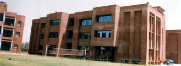

The school started on 19th April 2005 as the seventh school in the chain
of Amity International Schools run by a non-profit organization RBEF under
the chairmanship of Dr. Mrs. Amita Chauhan. The three acre school situated in Vasundhara,
Sector 6 adjacent to the National Highway 24, has a unique eco friendly building with twin
towers and a sprawling campus to accommodate approximately 2000 students. It is affiliated
to CBSE vide affiliation number 2130884 up to class XII. The school has been bringing laurels
through its class X and XII results for the past seven years. It offers a student friendly
curriculum with emphasis on holistic development of a child from Nursery to XII. Specialist
teachers are recruited who are highly motivated and have strong pedagogic skills to cater to the
academic needs of the students. Smart classes enrich the learning experience for the children.
We have an excellent student teacher ratio.
Equal importance is given to the physical quotient and facilities for football, basketball,
taekwondo, skating, table tennis, chess, athletics, yoga, rifle & pistol shooting, archery and
cricket are offered. The USP of the school is its state of the art shooting range which has nurtured
national level shooters.
The school has produced successful engineers, doctors, entrepreneurs and chartered accountants and has
alumni?s studying in reputed institutes such as IIT, BITS, AIIMS, DTU, Delhi University, Manipal, NIT,
Vellore and NIFT and even in international campuses.
ABOUT THE PRINCIPAL
Name: Ms. Sunila Athley
Qualifications: M.A, M.Phil, B.Ed
Alumnus of Fergusson College, Pune, recipient of National Scholarship from MHRD for topping the undergraduate
program. A specialist in linguistics and phonetics ? with 22 years of experience and 8 years of principalship,
professionally associated with R&D division of CBSE and NCERT w.r.t. Curriculum Designing, Teacher Manuals, Paper
Design, Online Competitions, Inspection of Schools, and CTET.